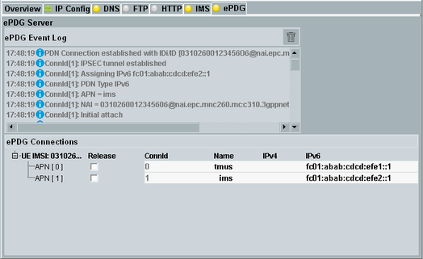

ePDG Tab
This tab configures and controls the evolved packet data gateway (ePDG) of the DAU. Option R&S CMW-KA065 is required to see the tab and to use the ePDG service.
In a 3GPP core network, the ePDG is the gateway to an untrusted non-3GPP access technology, for example to a WLAN gateway. The main role of the ePDG is to provide security mechanisms. For a secure connection via the untrusted WLAN, an IPsec tunnel is established between the DUT and the ePDG.
The ePDG is, for example, used for WLAN traffic offload tests. See also "Using the ePDG Service for WLAN Offload".
The ePDG tab shows an event log and information about established IPsec tunnels between the ePDG and DUTs.

Data application control - ePDG tab
Contents